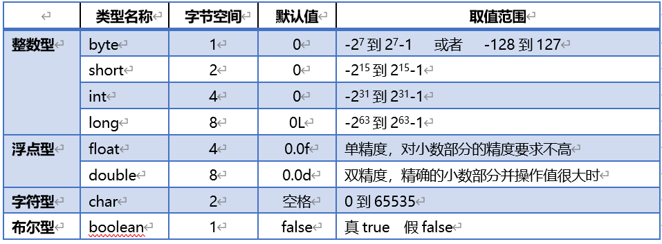

- java代码的执行流程
编译：通过javac命令(编译器)将java的源文件也就是.java文件编译成.class文件。
执行：先启动java虚拟机，不同的操作系统有不同的JVM，因此java跨平台。
再通过JVM加载HelloWorld.class字节码文件。并加载main方法执行程序。
- 标识符的命名规则
标识符可以由字母、数字、下划线（_）、美元符（$）组成，但不能包含 @、%、空格等其它特殊字符。
不能以数字开头。
标识符是严格区分大小写的。
标识符不可以使用java关键字
标识符的命名最好能反映出其作用，做到见名知意。
- 驼峰命名法
命名规则，变量首字母小写，多个单词第二个之后首字母大写，java中称为驼峰规则。
- 基本数据类型(八种)

在java中，除了以上8中基本数据类型，其他的都称为引用数据类型
- 隐式转换/显示转换
小转大：自动转换/隐式转换
不需要我们操作，编译器会自动进行转换操作
大转小：强制转换/显式转换
需要我们在要进行强转的变量或字面值前添加小括号（）小括号里放要转成的数据类型
- 进制转换
十进制转二进制方法：除二取余法
- 补码的互补对称现象
在补码中， 一个数的相反数等于这个数取反加一，最小值除外
归纳公式： -n = ~n+1
- `>>>`（逻辑右移位） 和 `>>`（数学右移位） 的区别
`>>>` 逻辑右移位：只是将数字向右移动，不管正数/负数
无论正负数，将数位整体右移动，低位溢出，高位补0
`>>` 数学右移位：正数移动以后是正数，负数移动以后是负数，数学除以2以后的结果
正数，将数位整体右移动，低位溢出，高位补0
负数，将数位整体右移动，低位溢出，高位补1，保持符号不变，结果是数学除2，向小方向取整数
- 分支结构
分支结构1：if
单分支：
if(boolean表达式){
代码。。。
}
双分支
if(boolean表达式){
代码1。。。
}else{
代码2。。。
}
多分支：
if(boolean表达式1){
代码1。。。
}else if(boolean表达式2){
代码2。。。
} else if(boolean表达式3){
代码3。。。
}else{
代码4。。。
}
分支结构2：switch
switch(变量或者表达式){
case 1:
case 2:
case 3:
case 4:
default:
}
- 跳过循环或者退出
break是跳出循环
continue是跳过此次循环，执行下一次循环
return直接返回调用的main函数，后面的代码都不执行，所以不执行打印“执行完成”的语句
标记名:...break 标记名;break后指定标记名称，结束指定范围内的循环
- 三种循环的区别
1. for：知道循环次数
2、while/do while：当循环次数不确定时
while：先判断，不符合规则，不执行代码
do while：代码最少被执行一次，再去判断，符合规则，再次执行代码
- 创建数组的方法
动态初始化
语法：数据类型[] 数组名 = new 数据类型[数组长度];
静态初始化
语法：数据类型[] 数组名 = new 数据类型[] {数据元素};
简写形式：数据类型[] 数组名 = {数据元素};
- 数组工具类Arrays
Arrays.toString(数组)
把数组里的数据，用逗号连接成一个字符串。
格式：[10, 14, 20, 46, 51]
Arrays.sort(数组)
对数组排序，对于基本类型的数组使用优化后的快速排序算法，效率高。
对引用类型数组，使用优化后的合并排序算法。
Arrays.copyOf(数组，新的长度)
把数组复制成一个指定长度的新数组。
新数组长度大于原数组，相当于复制，并增加位置。--数组的扩容
新数组长度小于原数组，相当于截取前一部分数据。--数组的缩容
- 方法的定义
形式：修饰符 返回值类型 方法名(参数列表){}
- 方法的重载
方法重载是指在一个类中定义多个同名的方法，但要求每个方法具有不同的参数列表(也就是说参数的个数和类型不同)。
程序调用方法时，可以通过传递给它们的不同个数和类型的参数来决定具体使用哪个方法。
- 排序法
冒泡排序：外层循环控制比较的轮数（n个数字比较n-1轮），内层循环控制每轮比较的次数（每轮比上一轮少比一次）
较相邻的两个元素，如果不符合排序规则，进行变量值的交换
插入排序：外层循环表示当前要进行插入比较的数字，内层循环表示当前数字前面所有的数字